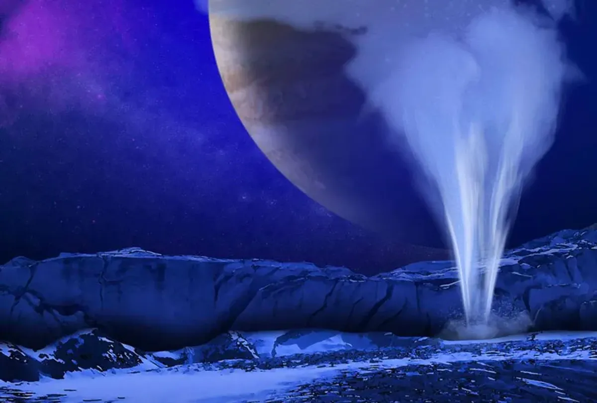
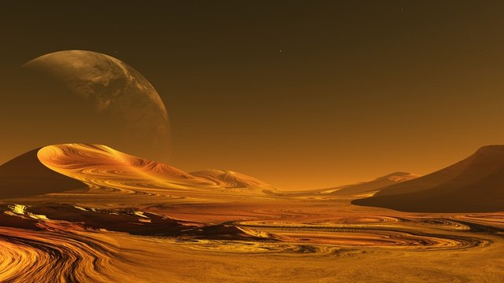

Para ver o código executado pressione F12 e olhe no console as mensagens.
Viajar para Europa, uma das luas de Júpiter, é uma experiência foradeste mundo, e nossas opções de voo estão à altura dessa aventura épica. Oferecemos viagens a bordo das sofisticadas naves da BlueOrigin e Virgin Galactic, projetadas para proporcionar uma viagem segura e confortável até a órbita de Júpiter. Cada nave é equipada com a mais alta tecnologia espacial, garantindo uma jornada tranquila através do vasto espaço. Reserve seu voo agora e embarque em uma das mais incríveis aventuras interplanetárias disponíveis.
Ao chegar em Europa, você será recebido em acomodações especialmente projetadas para garantir conforto e segurança. Nossas opções de hospedagem incluem o luxuoso Ice Horizon Hotel, que oferece vistas panorâmicas das fascinantes paisagens geladas, e o Europa Base Camp, uma escolha ideal para aventureiros que desejam uma experiência mais próxima da exploração científica. Cada alojamento é equipado com tecnologia de ponta para proporcionar uma estadia inesquecível enquanto você explora as maravilhas deste satélite.
Nossos pacotes turísticos em Europa oferecem atividades empolgantes e educativas para todos os gostos. Participe de expedições guiadas sobre a superfície gelada, explorando as incríveis fissuras e padrões naturais. Mergulhe em missões de coleta de amostras de gelo para ajudar a desvendar os mistérios do oceano subterrâneo. Além disso, oferecemos observações astronômicas noturnas, onde você poderá admirar Júpiter e suas outras luas através de telescópios de alta potência. Para os mais aventureiros, há ainda a possibilidade de participar de simulações de missões científicas, proporcionando uma experiência autêntica de exploração espacial.